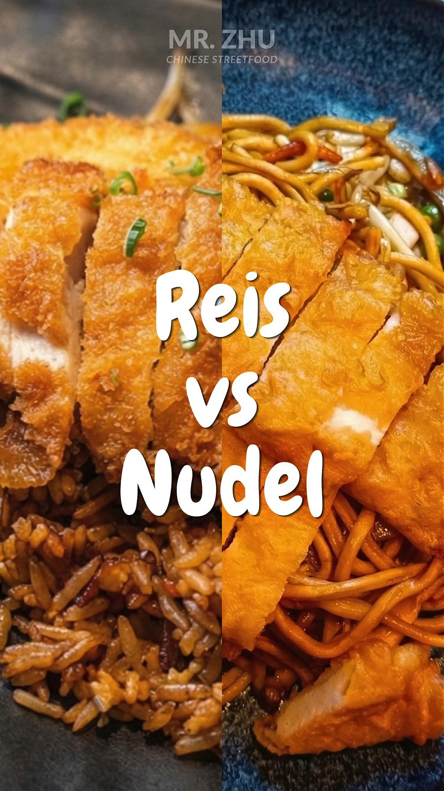

Hero · Real Client Deployment
Loading…
Visual Evidence
Six artifacts produced for the deployment, by archetype. The brand IG handle is not exposed in the public portfolio; hiring managers in the live walkthrough see the handle and can verify the feed directly.



Targeted disclosure visible in artifact 1: the Schüler aufgepasst Reel carries the footer line "Picture created with AI assistance" — a human-readable provenance disclosure aligned with EU AI Act Article 50 spirit, applied only to AI-generated photorealistic humans (the high-confusion-risk case), not to stylized illustration. This is the case study's most concrete instance of compliance-already-in-production.